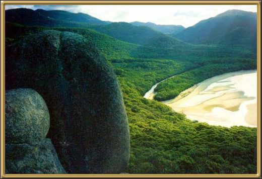

Wilson's Promontory is an incredibly beautiful coastal
area, backed by stunning granite mountains. Most of the area is National Park, and
to camp there (which you'd definitely want to do) you need to make bookings. Many of
the bushwalking tracks through the area require overnight trips, but are well worth it.
Photographer: Unknown